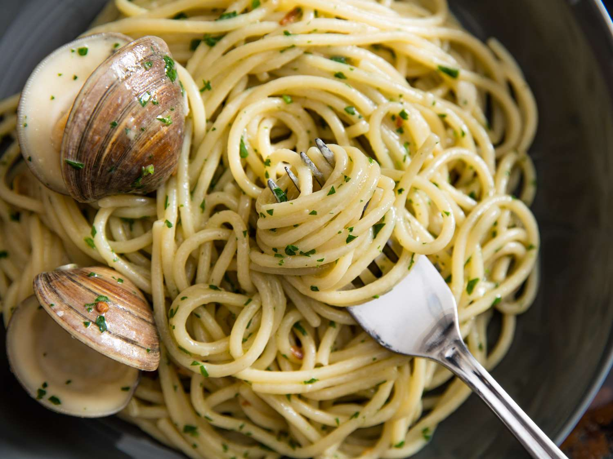

A traditional seafood favourite, spaghetti alle vongole is part of the Neapolitan cuisine of the Campania region of Italy. Enjoyed up and down the coast, this clam-filled delicacy is a cause of controversy for some. Whilst the pasta type for this dish, spaghetti - or as it’s known in Neapolitan dialect ‘vermecielle’ - is straightforward, making the sauce for this dish divides many. Some believe that the sauce should be made with tomato, adding a bit of colour and a burst of flavour, whilst there are those who staunchly argue that the dish should only be enjoyed ‘in bianco’ - in a white sauce with no tomatoes in sight. In our recipe we’ve sided with the former group, incorporating a small handful of cherry tomatoes into this delicious sauce.
All disputes aside, the real key to the perfect pasta alle vongole is in the freshness of the ingredients, selecting the best quality clams and the juiciest tomatoes and picking fresh pasta where you can will transform the outcome of your dish.
Bring 3 quarts water to a boil in a 5 quart pot. Season lightly with salt; add pasta and cook, stirring occasionally, until about 2 minutes before tender. Drain, reserving ½ cup pasta cooking water.
Meanwhile, heat 3 tablespoons oil in a large skillet over medium heat. Add garlic and cook, swirling pan often, until just golden. Add red pepper flakes and continue cooking 15 more seconds. Add wine, then clams; increase heat to high. Cover skillet and cook until clams open and release their juices, 3-6 minutes, depending on size of clams. As clams open, use tongs to transfer them to a bowl.
Add ¼ cup of the reserved pasta water to skillet; bring to a boil. Add pasta to pan. Cook over high heat, tossing constantly, until pasta is al dente and has soaked up some of the sauce from the pan. Add clams and any juices from bowl to pan, along with parsley, and toss to combine. (Add more pasta water if sauce seems dry.) Transfer pasta to warm bowls and drizzle with remaining oil.
And you're done!